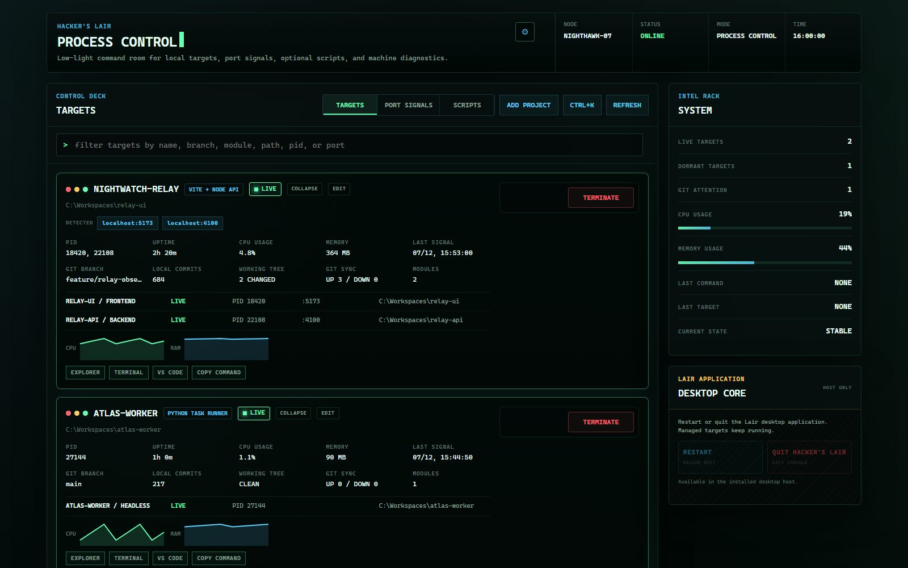

Hacker's
Hacker's Start and stop the whole stack
Group frontend, backend, worker, and Compose commands under one target. Per-target action locks prevent overlapping starts and stops.
Start complete projects, see what owns every localhost port, read live logs, and reclaim forgotten processes—without accounts, cloud services, or hand-edited config.
$ winget install hackerslair.desktop
CONSOLE_BOOT mode=process_control node=local
TARGET_REGISTRY_SYNCED count=4
> 3 targets running · 1 dormant
PORT_SIGNAL localhost:5173 owner=relay-ui
>
Choose a maintained package channel. Browser download buttons are intentionally absent; releases stay on GitHub with published SHA256 checksums.
Signal detected: windows_x64 · Winget
winget install --id hackerslair.desktop --exactBefore the Winget community manifest is approved, use the checksum-verifying installer:
irm https://alfonza1.github.io/hackers-lair/install.ps1 | iexSignal detected: linux_x64 · Debian / Ubuntu
curl -LO https://github.com/alfonza1/hackers-lair/releases/latest/download/hackers-lair_amd64.deb && sudo apt install ./hackers-lair_amd64.debFedora and RHEL packages, plus a distro-neutral tarball, are documented alongside checksum verification.
View every Linux command →Hacker's Lair turns process, port, Git, and log signals into one truthful view. Dormant targets stay compact; live targets expand only when telemetry exists.
Group frontend, backend, worker, and Compose commands under one target. Per-target action locks prevent overlapping starts and stops.
When a port is occupied, see the owning process, stop it deliberately, and retry. Detected URLs only appear when a listener or log signal is real.
Pick workspace folders, preview discovered Node, Compose, Maven, Gradle, or Python targets, and add only what you approve. An agent-ready setup prompt remains an equal path.
Config, logs, backups, preferences, and the rotating API identity stay in your user data directory. No account, analytics, cookies, or remote control plane.

The desktop host owns its private localhost service. Every mutation requires a rotating token, requests reject untrusted Host headers, and the UI verifies the launch identity before it loads.
Hacker's Lair is built in the open. If you care about desktop process control, cross-platform tooling, or dependable local developer infrastructure, there is useful work to own.
Choose an issue or describe the behavior you want to improve.
Reproduce it, add the smallest meaningful test, then make the change.
Run the Windows- and Linux-relevant checks and open a focused pull request.
Code is not the only useful signal. Reproduction steps, fixture captures, documentation fixes, and accessibility findings are welcome too.
v2.1.0-beta.1 · July 2026
Desktop-owned local service, Windows and Linux packages, first-run project scanning, full in-app editing, truthful target cards, command palette, Doctor reports, config backups, and hardened localhost control.